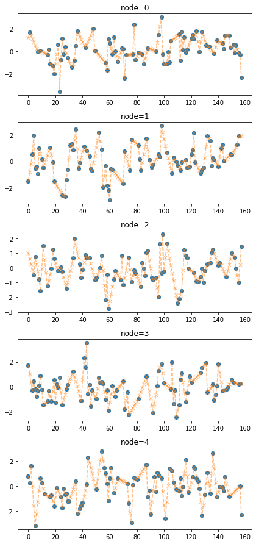
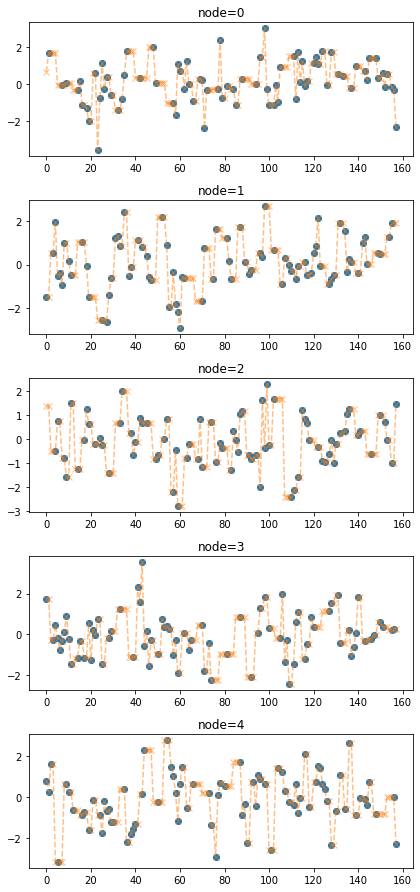

import numpy as np
import pandas as pd
import matplotlib.pyplot as plt
from matplotlib import animation
# torch
import torch
import torch.nn.functional as F
import torch_geometric_temporal
from torch_geometric_temporal.nn.recurrent import GConvGRU
# scipy
from scipy.interpolate import interp1d
# utils
import copy
import time
import pickle
from tqdm import tqdm
# rpy2
import rpy2
import rpy2.robjects as ro
from rpy2.robjects.vectors import FloatVector
import rpy2.robjects as robjects
from rpy2.robjects.packages import importr
import rpy2.robjects.numpy2ri as rpynimport
class RecurrentGCN(torch.nn.Module):
def __init__(self, node_features, filters):
super(RecurrentGCN, self).__init__()
self.recurrent = GConvGRU(node_features, filters, 2)
self.linear = torch.nn.Linear(filters, 1)
def forward(self, x, edge_index, edge_weight):
h = self.recurrent(x, edge_index, edge_weight)
h = F.relu(h)
h = self.linear(h)
return hmy functions
NotImplementedError:
Conversion rules for `rpy2.robjects` appear to be missing. Those
rules are in a Python contextvars.ContextVar. This could be caused
by multithreading code not passing context to the thread.
<module 'rpy2.robjects' from '/home/cgb4/anaconda3/envs/py37/lib/python3.7/site-packages/rpy2/robjects/__init__.py'>class DatasetLoader(object):
def __init__(self,data_dict):
self._dataset = data_dict
def _get_edges(self):
self._edges = np.array(self._dataset["edges"]).T
def _get_edge_weights(self):
self._edge_weights = np.ones(self._edges.shape[1])
def _get_targets_and_features(self):
stacked_target = np.array(self._dataset["FX"])
self.features = [
stacked_target[i : i + self.lags, :].T
for i in range(stacked_target.shape[0] - self.lags)
]
self.targets = [
stacked_target[i + self.lags, :].T
for i in range(stacked_target.shape[0] - self.lags)
]
def get_dataset(self, lags: int = 4) -> torch_geometric_temporal.signal.StaticGraphTemporalSignal:
"""Returning the Chickenpox Hungary data iterator.
Args types:
* **lags** *(int)* - The number of time lags.
Return types:
* **dataset** *(torch_geometric_temporal.signal.StaticGraphTemporalSignal)* - The Chickenpox Hungary dataset.
"""
self.lags = lags
self._get_edges()
self._get_edge_weights()
self._get_targets_and_features()
dataset = torch_geometric_temporal.signal.StaticGraphTemporalSignal(
self._edges, self._edge_weights, self.features, self.targets
)
return datasetdef miss_rand(train_dataset,missing_ratio=0.5):
f,lags = _convert_train_dataset(train_dataset)
T,N = f.shape
missing_count = int(np.round(missing_ratio*T,0))
mindex = [np.sort(np.random.choice(range(T),missing_count,replace=False)).tolist() for i in range(N)]
for i,m in enumerate(mindex):
f[m,i] = np.nan
data_dict = {
'edges':train_dataset.edge_index.T.tolist(),
'node_ids':{'node'+str(i):i for i in range(N)},
'FX':f.tolist()
}
train_dataset = DatasetLoader(data_dict).get_dataset(lags=lags)
train_dataset.mindex = mindex
return train_datasetdef padding(train_dataset_miss,*args,method='linear',**kwargs):
mindex = train_dataset_miss.mindex
f,lags = _convert_train_dataset(train_dataset_miss)
T,N = f.shape
FX = pd.DataFrame(f).interpolate(method=method,axis=0,*args,**kwargs).fillna(method='bfill').fillna(method='ffill').to_numpy().tolist()
data_dict = {
'edges':train_dataset_miss.edge_index.T.tolist(),
'node_ids':{'node'+str(i):i for i in range(N)},
'FX':FX
}
train_dataset_padded = DatasetLoader(data_dict).get_dataset(lags=lags)
train_dataset_padded.mindex = mindex
return train_dataset_paddedclass StgcnLearner:
def __init__(self,train_dataset):
self.train_dataset = train_dataset
self.lags = torch.tensor(train_dataset.features).shape[-1]
def learn(self,filters=32,epoch=50):
self.model = RecurrentGCN(node_features=self.lags, filters=filters)
self.optimizer = torch.optim.Adam(self.model.parameters(), lr=0.01)
self.model.train()
for epoch in tqdm(range(epoch)):
for t, snapshot in enumerate(self.train_dataset):
yt_hat = self.model(snapshot.x, snapshot.edge_index, snapshot.edge_attr)
cost = torch.mean((yt_hat-snapshot.y)**2)
cost.backward()
self.optimizer.step()
self.optimizer.zero_grad()
def __call__(self,dataset):
X = torch.tensor(dataset.features).float()
y = torch.tensor(dataset.targets).float()
yhat = torch.stack([self.model(snapshot.x, snapshot.edge_index, snapshot.edge_attr) for snapshot in dataset]).detach().squeeze().float()
return {'X':X, 'y':y, 'yhat':yhat} class Evaluator:
def __init__(self,learner,train_dataset,test_dataset):
self.learner = learner
self.learner.model.eval()
self.train_dataset = train_dataset
self.test_dataset = test_dataset
self.lags = lrnr.lags
rslt_tr = self.learner(self.train_dataset)
rslt_test = self.learner(self.test_dataset)
self.X_tr = rslt_tr['X']
self.y_tr = rslt_tr['y']
self.f_tr = torch.concat([self.train_dataset[0].x.T,self.y_tr],axis=0).float()
self.yhat_tr = rslt_tr['yhat']
self.fhat_tr = torch.concat([self.train_dataset[0].x.T,self.yhat_tr],axis=0).float()
self.X_test = rslt_test['X']
self.y_test = rslt_test['y']
self.f_test = self.y_test
self.yhat_test = rslt_test['yhat']
self.fhat_test = self.yhat_test
self.f = torch.concat([self.f_tr,self.f_test],axis=0)
self.fhat = torch.concat([self.fhat_tr,self.fhat_test],axis=0)
def calculate_mse(self):
train_mse_eachnode = ((self.y_tr-self.yhat_tr)**2).mean(axis=0).tolist()
train_mse_total = ((self.y_tr-self.yhat_tr)**2).mean().item()
test_mse_eachnode = ((self.y_test-self.yhat_test)**2).mean(axis=0).tolist()
test_mse_total = ((self.y_test-self.yhat_test)**2).mean().item()
self.mse = {'train': {'each_node': train_mse_eachnode, 'total': train_mse_total},
'test': {'each_node': test_mse_eachnode, 'total': test_mse_total}}
def _plot(self,*args,t=None,h=2.5,max_nodes=5,**kwargs):
T,N = self.f.shape
if N>max_nodes: N=max_nodes
if t == None: t = range(T)
fig = plt.figure()
ax = fig.subplots(N,1)
for n in range(N):
ax[n].plot(t,self.f[:,n],color='gray',*args,**kwargs)
ax[n].set_title('node='+str(n))
fig.set_figheight(N*h)
fig.tight_layout()
plt.close()
return fig
def plot(self,*args,t=None,h=2.5,**kwargs):
self.calculate_mse()
fig = self._plot(*args,t=None,h=2.5,**kwargs)
ax = fig.get_axes()
for i,a in enumerate(ax):
_mse1= self.mse['train']['each_node'][i]
_mse2= self.mse['test']['each_node'][i]
_title = 'node{0} \n mse(train) = {1:.2f}, mse(test) = {2:.2f}'.format(i,_mse1,_mse2)
a.set_title(_title)
_t1 = self.lags
_t2 = self.yhat_tr.shape[0]+self.lags
_t3 = len(self.f)
a.plot(range(_t1,_t2),self.yhat_tr[:,i],label='fitted (train)',color='C0')
a.plot(range(_t2,_t3),self.yhat_test[:,i],label='fitted (test)',color='C1')
a.legend()
_mse1 = self.mse['train']['total']
_mse2 = self.mse['test']['total']
fig.suptitle("Scenario: \n missing=0% \n interpolation=None \n mse(train) = {0:.2f}, mse(test) = {1:.2f} \n".format(_mse1,_mse2))
fig.tight_layout()
return figclass ITStgcnLearner(StgcnLearner):
def __init__(self,train_dataset):
super().__init__(train_dataset)
try:
self.mindex = self.train_dataset.mindex
except:
self.mindex = None
def learn(self,filters=32,epoch=50):
self.model = RecurrentGCN(node_features=self.lags, filters=filters)
self.optimizer = torch.optim.Adam(self.model.parameters(), lr=0.01)
self.model.train()
train_dataset_temp = copy.copy(self.train_dataset)
for epoch in tqdm(range(epoch)):
f,lags = _convert_train_dataset(train_dataset_temp)
f = update_from_freq_domain(f,self.mindex)
T,N = f.shape
data_dict_temp = {
'edges':self.train_dataset.edge_index.T.tolist(),
'node_ids':{'node'+str(i):i for i in range(N)},
'FX':f
}
train_dataset_temp = DatasetLoader(data_dict_temp).get_dataset(lags=self.lags)
for t, snapshot in enumerate(train_dataset_temp):
yt_hat = self.model(snapshot.x, snapshot.edge_index, snapshot.edge_attr)
cost = torch.mean((yt_hat-snapshot.y)**2)
cost.backward()
self.optimizer.step()
self.optimizer.zero_grad()From R
R[write to console]: Loading required package: igraph
R[write to console]:
Attaching package: ‘igraph’
R[write to console]: The following objects are masked from ‘package:stats’:
decompose, spectrum
R[write to console]: The following object is masked from ‘package:base’:
union
R[write to console]: Loading required package: wordcloud
R[write to console]: Loading required package: RColorBrewer
R[write to console]:
Attaching package: ‘zoo’
R[write to console]: The following objects are masked from ‘package:base’:
as.Date, as.Date.numeric
예제1: vanilla STGCN
- 데이터
- 학습
/tmp/ipykernel_3661717/1734957452.py:4: UserWarning: Creating a tensor from a list of numpy.ndarrays is extremely slow. Please consider converting the list to a single numpy.ndarray with numpy.array() before converting to a tensor. (Triggered internally at /opt/conda/conda-bld/pytorch_1639180588308/work/torch/csrc/utils/tensor_new.cpp:201.)
self.lags = torch.tensor(train_dataset.features).shape[-1]100%|████████████████████████████████████████████████████████████████████████████████████████████████████████████████████████████████████████████████████████████████████████████████████████████████████████████████████████████████████████████████████████████████| 50/50 [00:58<00:00, 1.17s/it]- 적합값
- 실행하면 X,y,yhat 출력
- 모형 평가 및 시각화
baseline
((torch.tensor(test_dataset.targets)- torch.tensor(test_dataset.targets).mean(axis=0).reshape(-1,5))**2).mean()tensor(1.2525, dtype=torch.float64)test MSE는 1.2525 보다는 무조건 낮아야함!! 아니라면 모형을 잘못 돌린거
예제2: padding missing values
- 데이터
- 임의로 결측치 발생
- 적절한 method로 결측치를 채움 (default 는 linear)
fig = plot(torch.tensor(train_dataset_miss.targets),'o')
plot_add(fig,torch.tensor(train_dataset_padded.targets),'--x',color='C1',alpha=0.5)
다른 method로 결측치를 채울수도 있음. 사용할 수 있는 방법들은 아래에 정리되어 있음
fig = plot(torch.tensor(train_dataset_miss.targets),'o')
plot_add(fig,torch.tensor(train_dataset_padded2.targets),'--x',color='C1',alpha=0.5)
예제3: vanilla STGCN with random missing
- data
- 학습
100%|████████████████████████████████████████████████████████████████████████████████████████████████████████████████████████████████████████████████████████████████████████████████████████████████████████████████████████████████████████████████████████████████| 50/50 [00:53<00:00, 1.06s/it]- 적합값
- 실행하면 X,y,yhat 출력
- 모형 평가 및 시각화
예제4: threshold example
- data
- 결측치 발생 및 패딩
- update by frequency thresholding
예제5: itera-tive thresholded STGCN (IT-STGCN)
- data
- 학습
100%|████████████████████████████████████████████████████████████████████████████████████████████████████████████████████████████████████████████████████████████████████████████████████████████████████████████████████████████████████████████████████████████████| 50/50 [00:56<00:00, 1.13s/it]- 적합값
- 실행하면 X,y,yhat 출력
- 모형 평가 및 시각화
예제6: GNAR
예제7: Simulation 스케쥴러
edges_tensor = torch.tensor(data['edges'])
fiveVTS = np.array(data['f'])
nonzero_indices = edges_tensor.nonzero()
fiveNet_edge = np.array(nonzero_indices).T
T = 200
N = 5 # number of Nodes
E = fiveNet_edge
V = np.array([1,2,3,4,5])
t = np.arange(0,T)
node_features = 1
edge_index = torch.tensor(E)
edge_attr = torch.tensor(np.array([1,1,1,1,1,1,1,1,1,1]),dtype=torch.float32)- train / test
Random Missing Values
class Missing:
def __init__(self,df):
self.df = df
self.N = N
self.number = []
def miss(self,percent=0.5):
self.missing = self.df.copy()
self.percent = percent
for i in range(self.N):
#self.seed = np.random.choice(1000,1,replace=False)
#np.random.seed(self.seed)
self.number.append(np.random.choice(int(len(self.df))-1,int(len(self.df)*self.percent),replace=False))
self.missing[self.number[i],i] = float('nan')
def first_mean(self):
self.train_mean = self.missing.copy()
for i in range(self.N):
self.train_mean[self.number[i],i] = np.nanmean(self.missing[:,i])
def second_linear(self):
self.train_linear = pd.DataFrame(self.missing)
self.train_linear.interpolate(method='linear', inplace=True)
self.train_linear = self.train_linear.fillna(0)
self.train_linear = np.array(self.train_linear).reshape(int(len(self.df)),N)Class code by Method
STGCN
class STGCN_Missing:
def __init__(self,Dataset,df, iterable, Method, Missingrate, Missingtype, lag, Number_of_filters, Interpolation):
self.Dataset = Dataset
self.df = df
self.iterable = iterable
self.Method = Method
self.Missingrate = Missingrate
self.Missingtype = Missingtype
self.lag = lag
self.Number_of_filters = Number_of_filters
self.Interpolation = Interpolation
def iter(self):
self.XX = torch.tensor(fiveVTS_test.reshape(int(T*0.2),N,1)[:-1,:,:]).float()
self.yy = torch.tensor(fiveVTS_test.reshape(int(T*0.2),N,1)[1:,:,:]).float()
self.real_y = torch.tensor(fiveVTS_train).reshape(int(T*0.8),N,1).float()[1:,:,:]
for i in range(self.iterable):
_zero = Missing(fiveVTS_train)
_zero.miss(percent = self.Missingrate)
_zero.second_linear()
missing_index = _zero.number
interpolated_signal = _zero.train_linear
X = torch.tensor(interpolated_signal).reshape(int(T*0.8),N,1).float()[:int(T*0.8-1),:,:]
y = torch.tensor(interpolated_signal).reshape(int(T*0.8),N,1).float()[1:,:,:]
net = RecurrentGCN(node_features=self.lag, filters=self.Number_of_filters)
optimizer = torch.optim.Adam(net.parameters(), lr=0.01)
net.train()
for epoch in range(50):
for time, (xt,yt) in enumerate(zip(X,y)):
yt_hat = net(xt, edge_index, edge_attr)
cost = torch.mean((yt_hat-yt)**2)
cost.backward()
optimizer.step()
optimizer.zero_grad()
yhat = torch.stack([net(xt, edge_index, edge_attr) for xt in X]).detach().numpy()
yyhat = torch.stack([net(xt, edge_index, edge_attr) for xt in self.XX]).detach().numpy()
train_mse_total_stgcn = (((self.real_y-yhat).squeeze())**2).mean()
test_mse_total_stgcn = (((self.yy-yyhat).squeeze())**2).mean()
df_row = pd.DataFrame(columns=col)
df_row['Dataset'] = self.Dataset,
df_row['iteration'] = i+1, # 1,2,3,...,10
df_row['method'] = self.Method, # 'stgcn','estgcn','gnar'
df_row['missingrate'] = self.Missingrate, # 0.0, 0.2, 0.4, 0.6, 0.8
df_row['missingtype'] = self.Missingtype, # None, 'randomly' and 'block'
df_row['lag'] = self.lag, # 1,2,3,4 ...
df_row['number_of_filters'] = self.Number_of_filters, # 16,24,32, ...
df_row['interpolation'] = self.Interpolation, # None, 'mean', 'linear'
df_row['MSE_train'] = train_mse_total_stgcn.tolist()
df_row['MSE_test'] = test_mse_total_stgcn.tolist()
self.df = pd.concat([self.df,df_row])Enhencement of STGCN
class ESTGCN_Missing:
def __init__(self,Dataset,df, iterable, Method, Missingrate, Missingtype, lag, Number_of_filters, Interpolation):
self.Dataset = Dataset
self.df = df
self.iterable = iterable
self.Method = Method
self.Missingrate = Missingrate
self.Missingtype = Missingtype
self.lag = lag
self.Number_of_filters = Number_of_filters
self.Interpolation = Interpolation
def iter(self):
self.XX = torch.tensor(fiveVTS_test.reshape(int(T*0.2),N,1)[:-1,:,:]).float()
self.yy = torch.tensor(fiveVTS_test.reshape(int(T*0.2),N,1)[1:,:,:]).float()
self.real_y = torch.tensor(fiveVTS_train).reshape(int(T*0.8),N,1).float()[1:,:,:]
for i in range(self.iterable):
_zero = Missing(fiveVTS_train)
_zero.miss(percent = self.Missingrate)
_zero.second_linear()
missing_index = _zero.number
interpolated_signal = _zero.train_linear
X = torch.tensor(interpolated_signal).reshape(int(T*0.8),N,1).float()[:int(T*0.8-1),:,:]
y = torch.tensor(interpolated_signal).reshape(int(T*0.8),N,1).float()[1:,:,:]
net = RecurrentGCN(node_features=self.lag, filters=self.Number_of_filters)
optimizer = torch.optim.Adam(net.parameters(), lr=0.01)
net.train()
signal = interpolated_signal.copy()
for epoch in range(50):
signal = update_from_freq_domain(signal,missing_index)
X = torch.tensor(signal).reshape(int(T*0.8),N,1).float()[:int(T*0.8-1),:,:]
y = torch.tensor(signal).reshape(int(T*0.8),N,1).float()[1:,:,:]
for time, (xt,yt) in enumerate(zip(X,y)):
yt_hat = net(xt, edge_index, edge_attr)
cost = torch.mean((yt_hat-yt)**2)
cost.backward()
optimizer.step()
optimizer.zero_grad()
signal = torch.concat([X.squeeze(),yt_hat.detach().squeeze().reshape(1,-1)])
yhat = torch.stack([net(xt, edge_index, edge_attr) for xt in X]).detach().numpy()
yyhat = torch.stack([net(xt, edge_index, edge_attr) for xt in self.XX]).detach().numpy()
train_mse_total_estgcn = (((self.real_y-yhat).squeeze())**2).mean()
test_mse_total_estgcn = (((self.yy-yyhat).squeeze())**2).mean()
df_row = pd.DataFrame(columns=col)
df_row['Dataset'] = self.Dataset,
df_row['iteration'] = i+1, # 1,2,3,...,10
df_row['method'] = self.Method, # 'stgcn','estgcn','gnar'
df_row['missingrate'] = self.Missingrate, # 0.0, 0.2, 0.4, 0.6, 0.8
df_row['missingtype'] = self.Missingtype, # None, 'randomly' and 'block'
df_row['lag'] = self.lag, # 1,2,3,4 ...
df_row['number_of_filters'] = self.Number_of_filters, # 16,24,32, ...
df_row['interpolation'] = self.Interpolation, # None, 'mean', 'linear'
df_row['MSE_train'] = train_mse_total_estgcn.tolist()
df_row['MSE_test'] = test_mse_total_estgcn.tolist()
self.df = pd.concat([self.df,df_row])GNAR
class GNAR_Missing:
def __init__(self,Dataset,df, iterable, Method, Missingrate, Missingtype, lag, Number_of_filters, Interpolation):
self.Dataset = Dataset
self.df = df
self.iterable = iterable
self.Method = Method
self.Missingrate = Missingrate
self.Missingtype = Missingtype
self.lag = lag
self.Number_of_filters = Number_of_filters
self.Interpolation = Interpolation
def iter(self):
self.yy = torch.tensor(fiveVTS_test.reshape(int(T*0.2),N,1)[1:,:,:]).float()
for i in range(self.iterable):
_zero = Missing(fiveVTS_train)
_zero.miss(percent = self.Missingrate)
_zero.second_linear()
missing_index = _zero.number
interpolated_signal = _zero.train_linear
X = torch.tensor(interpolated_signal).reshape(int(T*0.8),N,1).float()[:int(T*0.8-2),:,:]
answer = GNAR.GNARfit(vts=robjects.r.matrix(rpyn.numpy2rpy(np.array(X).squeeze()), nrow = 160, ncol = 5),net = GNAR.matrixtoGNAR(m), alphaOrder = 2, betaOrder = FloatVector([1, 1]))
predict = GNAR.predict_GNARfit(answer,n_ahead=40)
train_mse_total_gnar = ((pd.DataFrame(GNAR.residuals_GNARfit(answer)).values.reshape(-1,5))**2).mean()
test_mse_total_gnar = ((self.yy.squeeze() - pd.DataFrame(predict).values.reshape(-1,5)[:-1,:])**2).mean()
df_row = pd.DataFrame(columns=col)
df_row['Dataset'] = self.Dataset,
df_row['iteration'] = i+1, # 1,2,3,...,10
df_row['method'] = self.Method, # 'stgcn','estgcn','gnar'
df_row['missingrate'] = self.Missingrate, # 0.0, 0.2, 0.4, 0.6, 0.8
df_row['missingtype'] = self.Missingtype, # None, 'randomly' and 'block'
df_row['lag'] = self.lag, # 1,2,3,4 ...
df_row['number_of_filters'] = self.Number_of_filters, # 16,24,32, ...
df_row['interpolation'] = self.Interpolation, # None, 'mean', 'linear'
df_row['MSE_train'] = train_mse_total_gnar.tolist()
df_row['MSE_test'] = test_mse_total_gnar.tolist()
self.df = pd.concat([self.df,df_row])